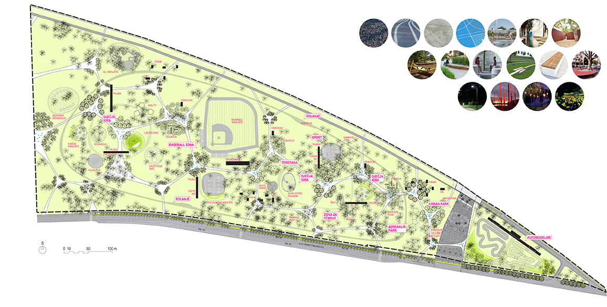
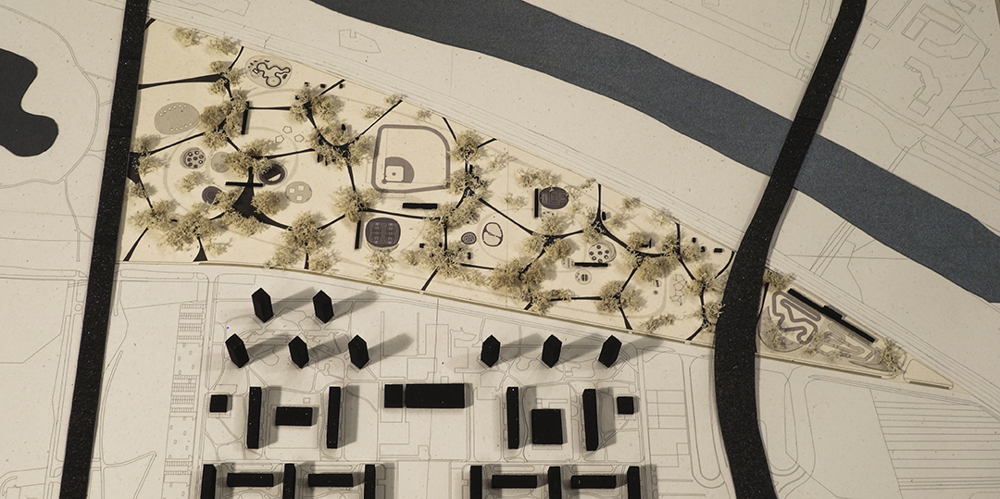
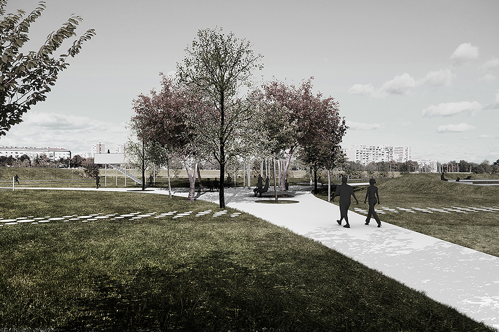
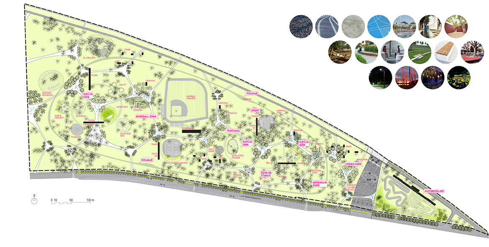
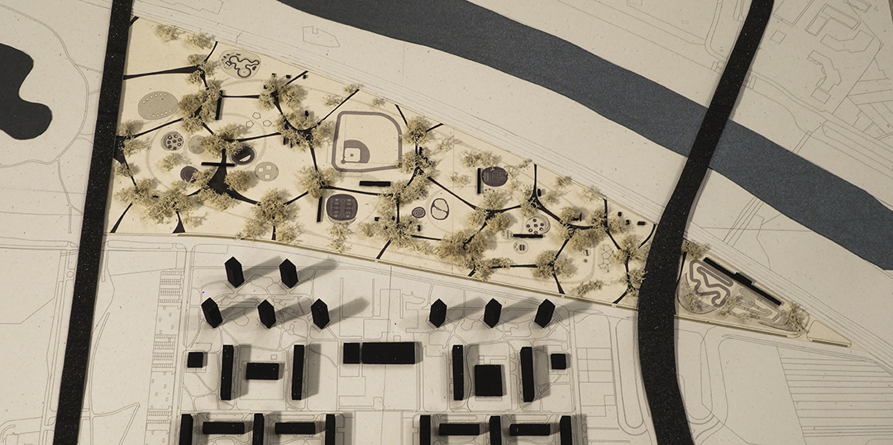
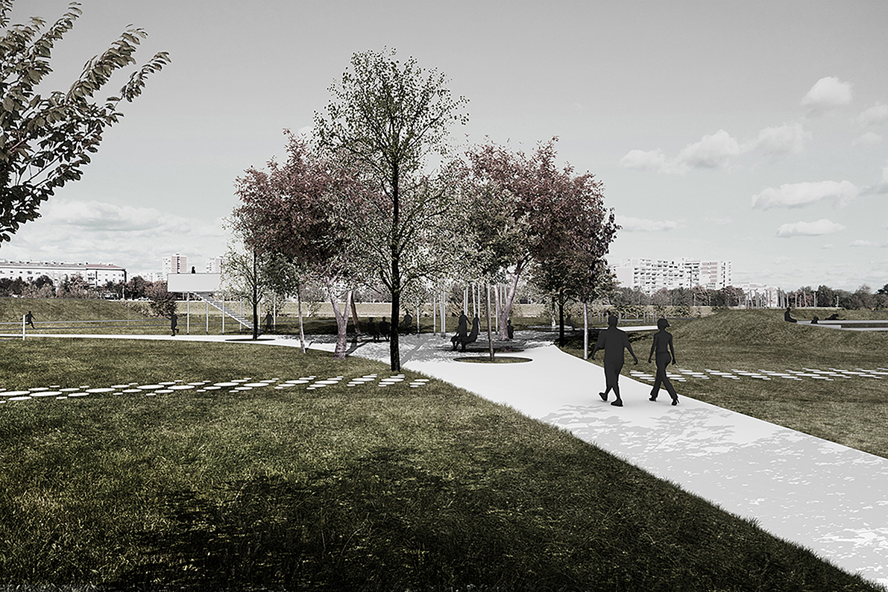

Tematski park Bundek – istok
Zagreb, Novi Zagreb — 2017
 





Opis
Prostor novog parka nalazi se između Bundeka, Save i naselja Novog Zagreba te danas djeluje izolirano i sadržajno nepovezano s okolinom. Projektom se park oblikuje kao poveznica između rijeke, jezera i grada, s naglaskom na javni, fleksibilni i fazno izvedivi prostor.
Koncept se temelji na mreži staza i zelenih „otoka“ koji uvažavaju postojeći krajobraz i stvaraju niz mikroambijenata za sport, rekreaciju, odmor i društvena događanja. Park je zamišljen kao dinamičan, prilagodljiv prostor socijalne interakcije, s jasnim zoniranjem sadržaja i naglašenom vizualnom i prostornom povezanošću prema Savi.
Tematski park Bundek - istok, natječaj - 1. nagrada
Iva Pejić, Kristina Jeren
2017
Grad Zagreb
Zagreb, Novi Zagreb